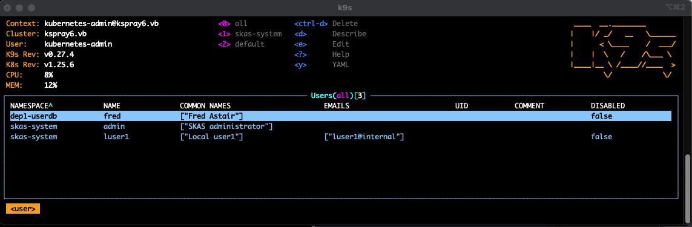
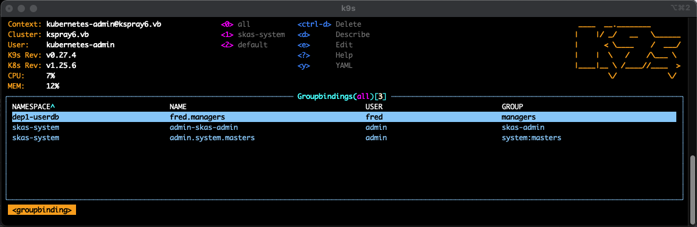
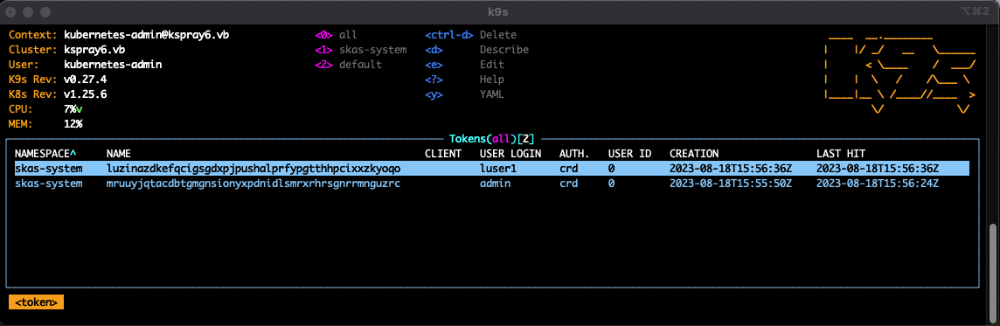
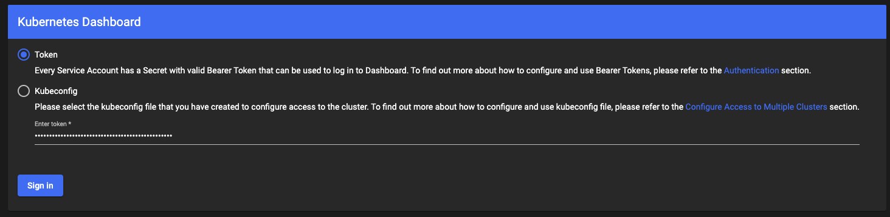

Tools and Tricks
reloader
Forgetting to restart a POD after making a configuration change is a common source of errors. Fortunately, there are tools available to help with this, such as Reloader.
The SKAS Helm chart adds the necessary annotations to the deployment to automate this process:
apiVersion: apps/v1
kind: Deployment
metadata:
annotations:
configmap.reloader.stakater.com/reload: skas-merge-config,skas-auth-config,skas-crd-config,
The list of
configMapis built dynamically by the Helm chart.
Of course, if Reloader is not installed in your cluster, this annotation will be ineffective."
Secret generator
As mentioned in Two LDAP servers configuration and Delegated users management, it's necessary to generate a random secret during deployment. To achieve this, you can utilize kubernetes-secret-generator, a custom Kubernetes controller.
Here is a manifest that, once applied, will create the secret skas2-client-secret, which is used for authenticating
communication between the two pods in the configurations mentioned above.
---
apiVersion: "secretgenerator.mittwald.de/v1alpha1"
kind: "StringSecret"
metadata:
name: skas2-client-secret
namespace: skas-system
spec:
fields:
- fieldName: "clientSecret"
encoding: "base64"
length: "15"
k9s
We'd like to highlight the utility of a fantastic tool called k9s. K9s is exceptional in that it can seamlessly handle Custom Resource Definitions (CRDs), making it a perfect choice for dynamically displaying, modifying or deleting SKAS resources.
As an example, you can access this screen using the skusers resource name:

This one using groupbindings:

This one using tokens:

Of course, k9s can't do more than what the launching user is allowed to do. This user can be authenticated using SKAS, but it must have a minimum set of rights to behave correctly.
For instance, you can launch k9s using the admin user account we have set up during the installation process, provided it is a member of the system:masters group.
Kubernetes dashboard
To log in to the Kubernetes dashboard with SKAS, follow these steps:
- Ensure you are logged in using the CLI.
- Use the kubectl
sk whoami --allcommand to retrieve your currently allocated token."
$ kubectl sk login admin
Password:
logged successfully..
$ kubectl sk whoami --all
USER ID GROUPS AUTH. TOKEN
admin 0 skas-admin,system:masters crd znitotnewjbqbuolqacckvgxyhptoxsuykznrzdacuvdhimy
Now, simply copy and paste the token value into the dashboard's login screen:

Of course, the operations you can perform through the dashboard will be limited by the logged-in user's permissions.
Tricks: Handle two different sessions
When working on user permissions, it could be useful to have separate session, at least one as admin, and one as a user to test its capability.
But, the default Kubernetes configuration is not bound to a terminal session but to a user. Therefore, any modifications
made to the local configuration (kubectl config ...) will affect all sessions.
To work around this, you can change the location of the Kubernetes configuration for a specific session by modifying
the KUBECONFIG environment variable:
/tmp/kconfigmay be an empty or un-existing file
Then you can initialize a new Kubernetes/SKAS context